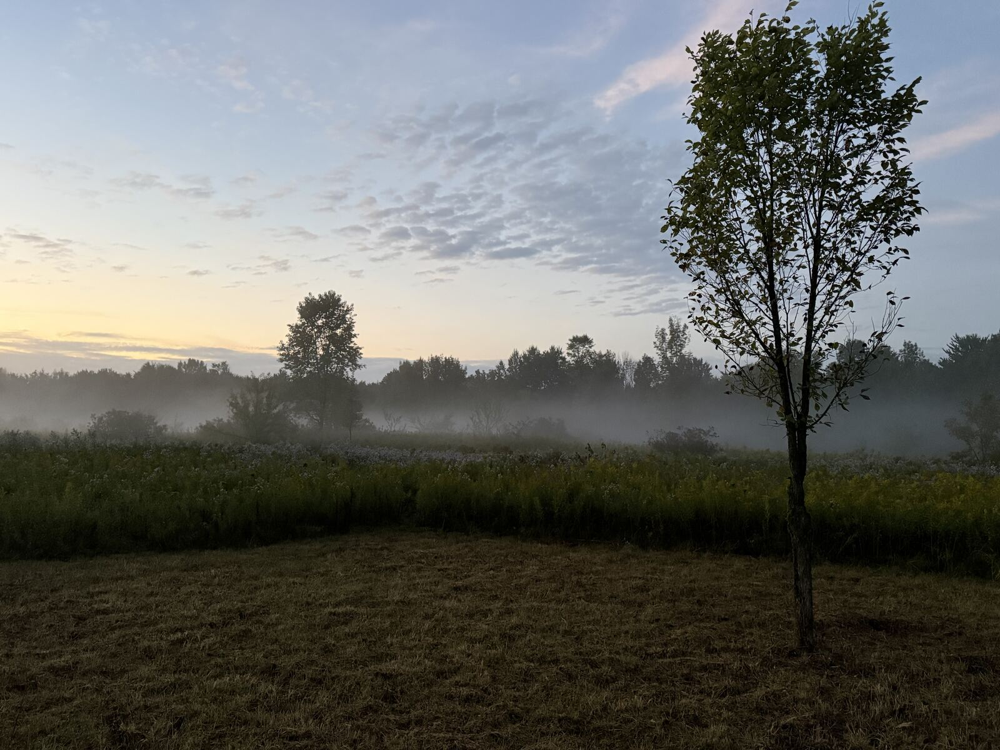
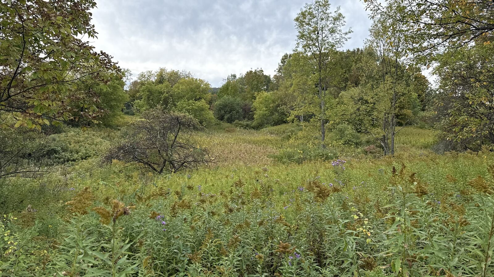
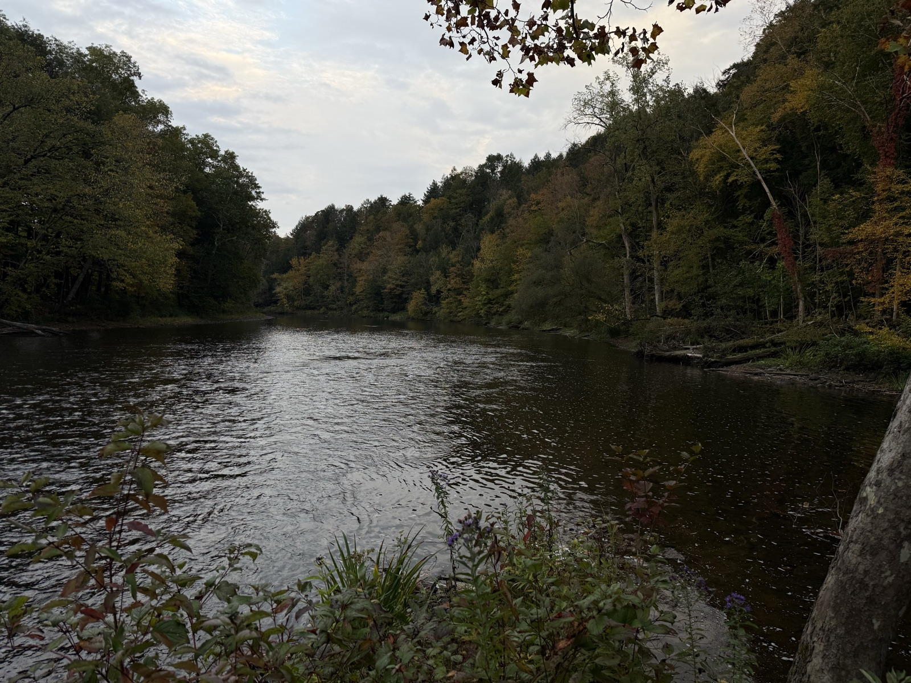
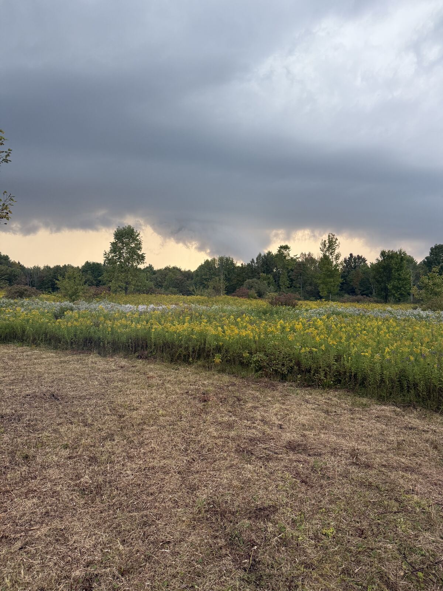
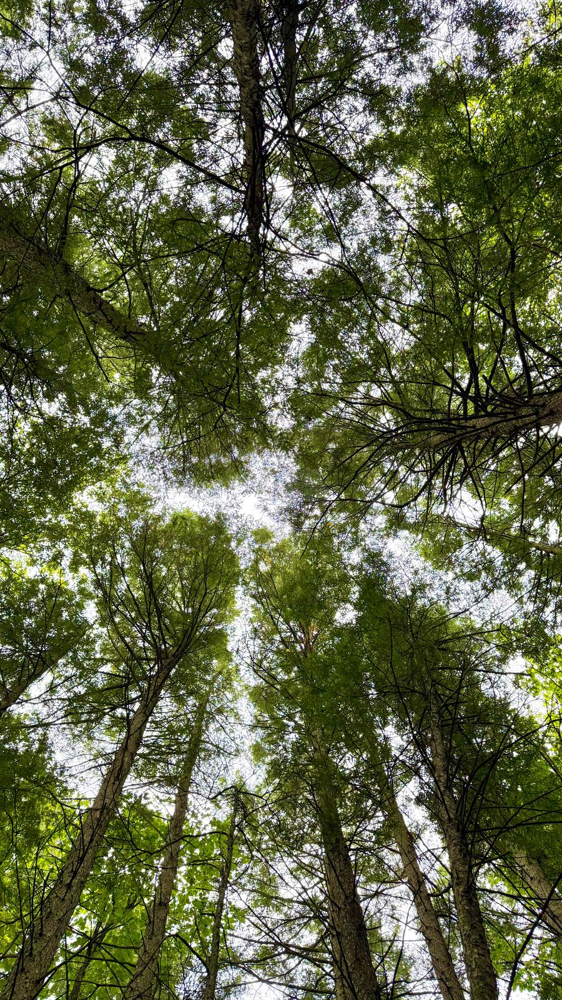
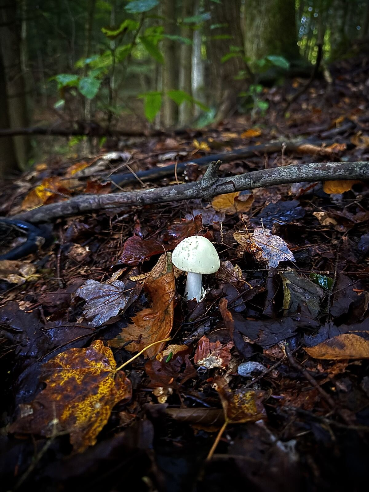
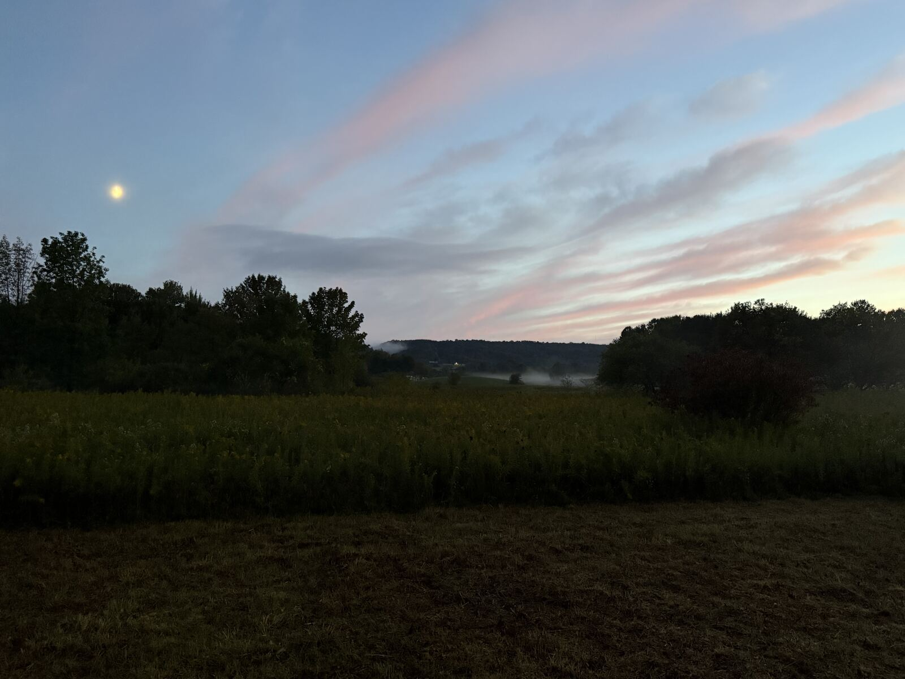
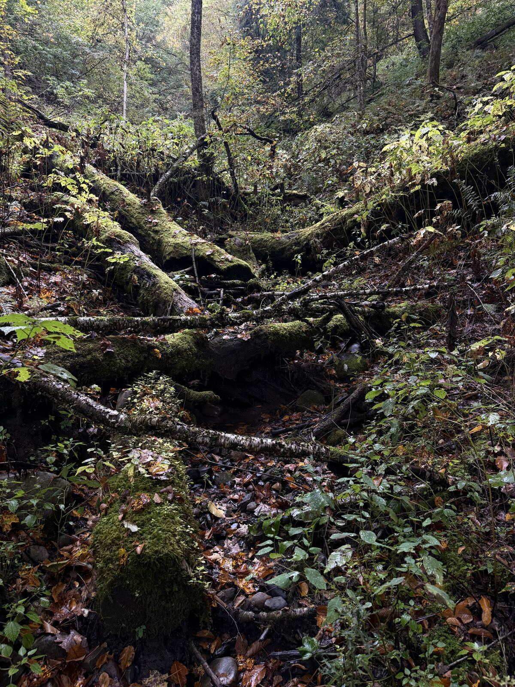
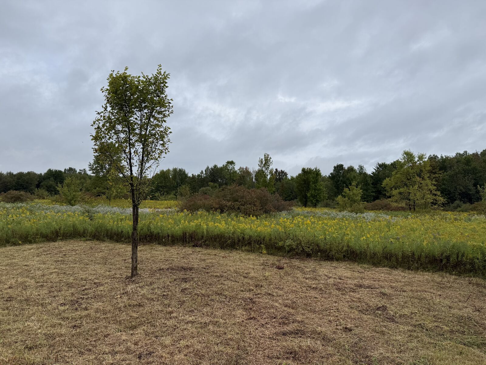
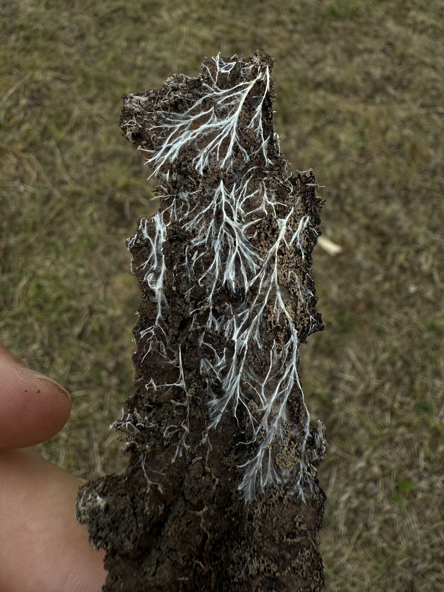

same old samsara
the same old cycle.
a creative outlet: films from the land, handmade jewelry, beading patterns, and whatever comes next. two guys, 34 acres in central new york, learning as we go.
the land
34 acres · central new york · since sept 4, 2026meadow, woods and a creek. right now it's goldenrod, mushrooms and a lot of figuring out. the plan is a small farm: a market garden, a farm stand, flowers.










films
season 1 · 2026a documentary about our first year on 34 acres in central new york. one season a year.

make
beading patterns + the bead labbrick stitch and bead loom patterns. every bead charted, a word chart you can tick off, toho colors listed. a few are free.

wear
handmade jewelrybeaded by hand, one bead at a time. this is the shop that keeps the films going.


the wheel of the year
what the land is doing, month by monthtap a month. this is year one, so we're still learning what the land does.